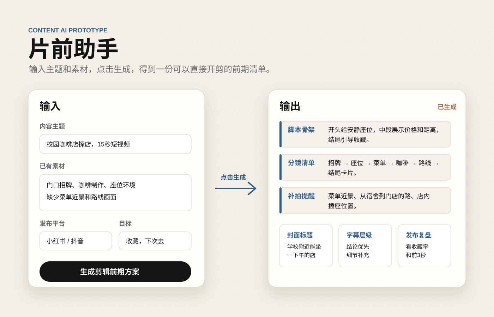

代表项目 01
片前助手
短视频前期整理工具，用来梳理脚本、分镜、素材缺口、封面标题和剪辑方向。
查看案例Featured Cases
把重点作品按项目来讲：目标、职责、工具和最终产出。
Case 01 / Content Tool
我想解决的是“还没开剪，想法已经散了”的问题。

Case 02 / Video Editing
项目类型：虚构 App 宣传片练习。重点是把抽象的信息流剪成清晰的画面节奏。
App Promo / Editing / Motion Package
我的职责包括脚本拆解、AI 镜头参考、PR 节奏剪辑和 AE 字幕包装。制作时最麻烦的是：信息很多，但画面不能乱。
先拆早晨、通勤、办公三个场景，再决定镜头顺序和字幕层级。
把“信息流”这种抽象概念转成看得懂的节奏和画面重点。
Case 03 / After Effects
同一 App 主题的另一条练习，重点放在 AE UI 动效、线条、转场和信息层级。
AE 2024 / UI Motion / Source Project
这条作品主要看 AE 执行能力。画面里把手机界面、发光路径、中文字幕和镜头推进分层管理，保留了可继续修改的源工程。
单独打开 AE 成片AIGC Visual Case
短视频平台视觉实验，重点看人物质感、风格统一和首屏吸引力。
Practice / Supporting Work
这些不是主项目，但能补充画面审美、版式和执行习惯。
AE / Particle / Glow
发光字体和粒子扩散练习。
AE / Typography
标题、颜色和反射效果练习。
Photography
旅行和日常拍摄，主要看构图、光线和画面节奏。
Poster Practice / Product Visual
三张商品视觉练习，主要看产品质感、留白和字体重量。
2D Poster / Graphic Study
偏字体、网格、色块和信息层级的练习。
Skills & Tools
围绕剪辑、动效、视觉和内容项目整理，不写得太满。
剪辑节奏、字幕层级、配乐、基础调色和成片导出。
标题动效、UI 包装、线条、粒子和简单合成工程整理。
用 AI 辅助视觉参考、封面方向、图像生成和内容构思。
HTML / CSS / JavaScript 基础，能整理项目页和线上作品集。
电话：+86 186 9775 2007
邮箱：1225762114@qq.com / xxsfwz666@gmail.com
微信：xxsfwz
{kind=link}
{kind=link}
{kind=link}
{kind=link}
{kind=link}
{kind=link}
{kind=link}
{kind=link}
{kind=link}
{kind=link}
{kind=link}
{kind=link}